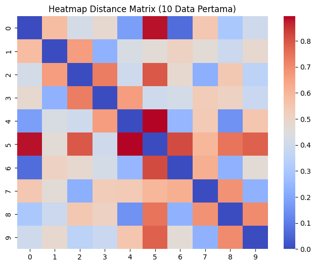

Pengukuran Jarak Data Mahasiswa#
Dataset ini merupakan dataset yang berisi data mahasiswa dengan beberapa atribut yang berbeda tipe data. Setiap baris merepresentasikan satu mahasiswa yang mencakup informasi umur, IPK, tingkat stres, metode belajar, serta informasi keikutsertaan organisasi dan akses internet. Dataset ini digunakan untuk mempelajari pengukuran jarak pada data campuran (mixed data).
Pengukuran Jarak#
Deskripsi Dataset#
Dataset yang digunakan dalam praktikum ini adalah dataset mahasiswa yang berisi informasi mengenai karakteristik mahasiswa seperti umur, IPK, tingkat stres, metode belajar, serta aktivitas organisasi. Dataset ini digunakan untuk melakukan analisis pengukuran jarak antar objek dengan tipe data campuran (mixed data types), yaitu numerik, ordinal, kategorikal, dan binary. Jumlah data dalam dataset ini adalah 100 baris dengan 7 atribut.
Mahasiswa Dataset#
Klasifikasi Tipe Data#
No |
Kolom |
Tipe Data |
Penjelasan |
|---|---|---|---|
1 |
id |
Numerik (Identifier) |
Nomor identitas data mahasiswa |
2 |
umur |
Numerik |
Umur mahasiswa |
3 |
ipk |
Numerik |
Indeks Prestasi Kumulatif |
4 |
tingkat_stres |
Ordinal |
Tingkatan stres (rendah < sedang < tinggi) |
5 |
metode_belajar |
Kategorikal |
visual, audio, praktik |
6 |
ikut_organisasi |
Binary |
1 = ikut organisasi, 0 = tidak |
7 |
akses_internet |
Binary |
1 = memiliki akses internet, 0 = tidak |
Ringkasan Klasifikasi Tipe Data#
Numerik : umur, ipk
Ordinal : tingkat_stres
Kategorikal : metode_belajar
Binary : ikut_organisasi, akses_internet
Normalisasi/Konversi#
Konversi Atribut Binary#
Atribut binary sudah direpresentasikan dalam bentuk angka.
Atribut |
Nilai |
|---|---|
ikut_organisasi |
1 = Ya, 0 = Tidak |
akses_internet |
1 = Ada, 0 = Tidak |
Contoh Data :
id |
umur |
ipk |
tingkat_stres |
metode_belajar |
ikut_organisasi |
akses_internet |
|---|---|---|---|---|---|---|
1 |
20 |
3.4 |
sedang |
visual |
1 |
1 |
2 |
21 |
3.1 |
tinggi |
audio |
0 |
1 |
3 |
19 |
3.7 |
rendah |
praktik |
1 |
1 |
4 |
22 |
2.9 |
tinggi |
visual |
0 |
1 |
import pandas as pd
df = pd.read_csv("../data_mahasiswa.csv")
df.index = df.index + 1
df.head(len(df))
| id | umur | ipk | tingkat_stres | metode_belajar | ikut_organisasi | akses_internet | |
|---|---|---|---|---|---|---|---|
| 1 | 1 | 20 | 3.4 | sedang | visual | 1 | 1 |
| 2 | 2 | 21 | 3.1 | tinggi | audio | 0 | 1 |
| 3 | 3 | 19 | 3.7 | rendah | praktik | 1 | 1 |
| 4 | 4 | 22 | 2.9 | tinggi | visual | 0 | 1 |
| 5 | 5 | 20 | 3.5 | sedang | audio | 1 | 1 |
| ... | ... | ... | ... | ... | ... | ... | ... |
| 96 | 96 | 20 | 3.8 | rendah | praktik | 1 | 1 |
| 97 | 97 | 23 | 2.6 | tinggi | audio | 0 | 0 |
| 98 | 98 | 21 | 3.4 | sedang | visual | 1 | 1 |
| 99 | 99 | 19 | 3.7 | rendah | praktik | 0 | 1 |
| 100 | 100 | 22 | 3.2 | sedang | audio | 1 | 1 |
100 rows × 7 columns
import pandas as pd
df = pd.read_csv("../data_mahasiswa.csv")
print("Jumlah Data :", df.shape[0])
print("Jumlah Kolom :", df.shape[1])
df.describe()
Jumlah Data : 100
Jumlah Kolom : 7
| id | umur | ipk | ikut_organisasi | akses_internet | |
|---|---|---|---|---|---|
| count | 100.000000 | 100.000000 | 100.000000 | 100.000000 | 100.000000 |
| mean | 50.500000 | 20.940000 | 3.311000 | 0.520000 | 0.800000 |
| std | 29.011492 | 1.293496 | 0.387662 | 0.502117 | 0.402015 |
| min | 1.000000 | 19.000000 | 2.600000 | 0.000000 | 0.000000 |
| 25% | 25.750000 | 20.000000 | 3.000000 | 0.000000 | 1.000000 |
| 50% | 50.500000 | 21.000000 | 3.300000 | 1.000000 | 1.000000 |
| 75% | 75.250000 | 22.000000 | 3.700000 | 1.000000 | 1.000000 |
| max | 100.000000 | 23.000000 | 3.900000 | 1.000000 | 1.000000 |
df.info()
<class 'pandas.core.frame.DataFrame'>
RangeIndex: 100 entries, 0 to 99
Data columns (total 7 columns):
# Column Non-Null Count Dtype
--- ------ -------------- -----
0 id 100 non-null int64
1 umur 100 non-null int64
2 ipk 100 non-null float64
3 tingkat_stres 100 non-null object
4 metode_belajar 100 non-null object
5 ikut_organisasi 100 non-null int64
6 akses_internet 100 non-null int64
dtypes: float64(1), int64(4), object(2)
memory usage: 5.6+ KB
Klasifikasi Tipe Data#
Dataset ini memiliki tipe data campuran yang terdiri dari:
Numerik: umur, ipk
Ordinal: tingkat_stres
Kategorikal (Nominal): metode_belajar
Binary: ikut_organisasi, akses_internet
df.isnull().sum()
id 0
umur 0
ipk 0
tingkat_stres 0
metode_belajar 0
ikut_organisasi 0
akses_internet 0
dtype: int64
Analisis Missing Value#
Berdasarkan hasil pemeriksaan menggunakan fungsi isnull().sum(), tidak ditemukan nilai kosong pada dataset. Seluruh atribut memiliki jumlah data yang lengkap sehingga tidak diperlukan proses imputasi data.
stress_map = {
"rendah":1,
"sedang":2,
"tinggi":3
}
df["tingkat_stres"] = df["tingkat_stres"].map(stress_map)
df.head()
| id | umur | ipk | tingkat_stres | metode_belajar | ikut_organisasi | akses_internet | |
|---|---|---|---|---|---|---|---|
| 0 | 1 | 20 | 3.4 | 2 | visual | 1 | 1 |
| 1 | 2 | 21 | 3.1 | 3 | audio | 0 | 1 |
| 2 | 3 | 19 | 3.7 | 1 | praktik | 1 | 1 |
| 3 | 4 | 22 | 2.9 | 3 | visual | 0 | 1 |
| 4 | 5 | 20 | 3.5 | 2 | audio | 1 | 1 |
Transformasi Data#
Sebelum dilakukan perhitungan jarak, beberapa atribut perlu ditransformasikan ke dalam bentuk numerik.
Transformasi dilakukan sebagai berikut:
Data ordinal diubah menjadi angka berdasarkan urutan tingkatannya.
Data kategorikal dapat dilakukan encoding jika diperlukan.
Data numerik dinormalisasi menggunakan metode Min-Max agar memiliki rentang nilai yang sama.
Encoding Data Ordinal#
Pengukuran Atribut Ordinal#
Atribut tingkat_stres merupakan data ordinal yang memiliki urutan sebagai berikut:
rendah < sedang < tinggi
Oleh karena itu dilakukan konversi menjadi nilai numerik:
rendah = 1
sedang = 2
tinggi = 3
Nilai tingkat_stres:
tingkat_stres |
Rank |
|---|---|
rendah |
1 |
sedang |
2 |
tinggi |
3 |
Normalisasi:
Contoh Normalisasi Rank:
sedang = 2 tinggi = 3
Jadi jarak ordinal antara 2 rank diatas:
Contoh Hasil :
id |
tingkat_stres |
nilai ordinal |
|---|---|---|
1 |
sedang |
0.50 |
2 |
tinggi |
1.00 |
3 |
rendah |
0.00 |
4 |
tinggi |
1.00 |
5 |
sedang |
0.50 |
6 |
tinggi |
1.00 |
7 |
sedang |
0.50 |
8 |
rendah |
0.00 |
Normalisasi Data Numerik#
Normalisasi dilakukan untuk menghindari dominasi atribut dengan skala besar.
Metode yang digunakan adalah Min-Max Normalization dengan rumus:
Normalisasi dilakukan pada atribut numerik yaitu:
umur
ipk
Contoh:
misal:
min umur = 19
max umur = 23
jika:
umur1 = 20
umur2 = 21
Normalisasi:
Untuk data dengan nilai umur = 20
Untuk data dengan nilai umur = 21
Jadi, jarak dari 2 nilai umur:
from sklearn.preprocessing import MinMaxScaler
scaler = MinMaxScaler()
df[["umur","ipk"]] = scaler.fit_transform(df[["umur","ipk"]])
df.head()
| id | umur | ipk | tingkat_stres | metode_belajar | ikut_organisasi | akses_internet | |
|---|---|---|---|---|---|---|---|
| 0 | 1 | 0.25 | 0.615385 | 2 | visual | 1 | 1 |
| 1 | 2 | 0.50 | 0.384615 | 3 | audio | 0 | 1 |
| 2 | 3 | 0.00 | 0.846154 | 1 | praktik | 1 | 1 |
| 3 | 4 | 0.75 | 0.230769 | 3 | visual | 0 | 1 |
| 4 | 5 | 0.25 | 0.692308 | 2 | audio | 1 | 1 |
import gower
import pandas as pd
df = pd.read_csv("../data_mahasiswa.csv")
distance_matrix = gower.gower_matrix(df.drop(columns=["id"]))
distance_df = pd.DataFrame(distance_matrix)
distance_df.head()
| 0 | 1 | 2 | 3 | 4 | 5 | 6 | 7 | 8 | 9 | ... | 90 | 91 | 92 | 93 | 94 | 95 | 96 | 97 | 98 | 99 | |
|---|---|---|---|---|---|---|---|---|---|---|---|---|---|---|---|---|---|---|---|---|---|
| 0 | 0.000000 | 0.580128 | 0.413462 | 0.480769 | 0.179487 | 0.881410 | 0.067308 | 0.551282 | 0.301282 | 0.400641 | ... | 0.868590 | 0.012821 | 0.605769 | 0.262821 | 0.246795 | 0.384615 | 0.894231 | 0.041667 | 0.580128 | 0.275641 |
| 1 | 0.580128 | 0.000000 | 0.660256 | 0.233974 | 0.426282 | 0.467949 | 0.512820 | 0.464744 | 0.387821 | 0.480769 | ... | 0.455128 | 0.592949 | 0.352564 | 0.567308 | 0.333333 | 0.631410 | 0.314103 | 0.538462 | 0.493590 | 0.387821 |
| 2 | 0.413462 | 0.660256 | 0.000000 | 0.727564 | 0.400641 | 0.794872 | 0.480769 | 0.221154 | 0.548077 | 0.346154 | ... | 0.782051 | 0.400641 | 0.358974 | 0.342949 | 0.660256 | 0.054487 | 0.974359 | 0.455128 | 0.166667 | 0.522436 |
| 3 | 0.480769 | 0.233974 | 0.727564 | 0.000000 | 0.660256 | 0.400641 | 0.413462 | 0.532051 | 0.512820 | 0.381410 | ... | 0.387821 | 0.493590 | 0.586538 | 0.551282 | 0.233974 | 0.698718 | 0.413462 | 0.439103 | 0.560897 | 0.538462 |
| 4 | 0.179487 | 0.426282 | 0.400641 | 0.660256 | 0.000000 | 0.894231 | 0.246795 | 0.538462 | 0.147436 | 0.554487 | ... | 0.881410 | 0.166667 | 0.426282 | 0.275641 | 0.426282 | 0.371795 | 0.740385 | 0.221154 | 0.567308 | 0.121795 |
5 rows × 100 columns
Perhitungan Jarak Menggunakan Gower Distance#
Karena dataset memiliki tipe data campuran, metode yang digunakan adalah Gower Distance.
Gower Distance dapat menghitung jarak antar objek yang memiliki kombinasi data numerik, ordinal, kategorikal, dan binary.
Rumus umum Gower Distance:
Menghitung Gower Distance#
Setelah semua atribut dihitung, jarak total dihitung dengan Gower Distance.
Rumus:
dengan:
\(D_ij\) = jarak antara objek i dan j
\(d_ij\) = jarak atribut ke-k antara objek i dan j
\(p\) = jumlah atribut
Contoh Perhitungan
jarak tiap atribut antara Data 1 dan Data 2 adalah:
atribut |
jarak |
|---|---|
ikut_organisasi |
1 |
akses_internet |
0 |
metode_belajar |
1 |
umur |
0.25 |
ipk |
0.23 |
tingkat_stres |
0.5 |
Maka:
import pandas as pd
distance_df = pd.DataFrame(distance_matrix)
distance_df.head(10)
| 0 | 1 | 2 | 3 | 4 | 5 | 6 | 7 | 8 | 9 | ... | 90 | 91 | 92 | 93 | 94 | 95 | 96 | 97 | 98 | 99 | |
|---|---|---|---|---|---|---|---|---|---|---|---|---|---|---|---|---|---|---|---|---|---|
| 0 | 0.000000 | 0.580128 | 0.413462 | 0.480769 | 0.179487 | 0.881410 | 0.067308 | 0.551282 | 0.301282 | 0.400641 | ... | 0.868590 | 0.012821 | 0.605769 | 0.262821 | 0.246795 | 0.384615 | 0.894231 | 0.041667 | 0.580128 | 0.275641 |
| 1 | 0.580128 | 0.000000 | 0.660256 | 0.233974 | 0.426282 | 0.467949 | 0.512820 | 0.464744 | 0.387821 | 0.480769 | ... | 0.455128 | 0.592949 | 0.352564 | 0.567308 | 0.333333 | 0.631410 | 0.314103 | 0.538462 | 0.493590 | 0.387821 |
| 2 | 0.413462 | 0.660256 | 0.000000 | 0.727564 | 0.400641 | 0.794872 | 0.480769 | 0.221154 | 0.548077 | 0.346154 | ... | 0.782051 | 0.400641 | 0.358974 | 0.342949 | 0.660256 | 0.054487 | 0.974359 | 0.455128 | 0.166667 | 0.522436 |
| 3 | 0.480769 | 0.233974 | 0.727564 | 0.000000 | 0.660256 | 0.400641 | 0.413462 | 0.532051 | 0.512820 | 0.381410 | ... | 0.387821 | 0.493590 | 0.586538 | 0.551282 | 0.233974 | 0.698718 | 0.413462 | 0.439103 | 0.560897 | 0.538462 |
| 4 | 0.179487 | 0.426282 | 0.400641 | 0.660256 | 0.000000 | 0.894231 | 0.246795 | 0.538462 | 0.147436 | 0.554487 | ... | 0.881410 | 0.166667 | 0.426282 | 0.275641 | 0.426282 | 0.371795 | 0.740385 | 0.221154 | 0.567308 | 0.121795 |
| 5 | 0.881410 | 0.467949 | 0.794872 | 0.400641 | 0.894231 | 0.000000 | 0.814103 | 0.599359 | 0.746795 | 0.782051 | ... | 0.012821 | 0.894231 | 0.820513 | 0.618590 | 0.634615 | 0.766026 | 0.179487 | 0.839744 | 0.628205 | 0.772436 |
| 6 | 0.067308 | 0.512820 | 0.480769 | 0.413462 | 0.246795 | 0.814103 | 0.000000 | 0.618590 | 0.233974 | 0.467949 | ... | 0.801282 | 0.080128 | 0.673077 | 0.221154 | 0.179487 | 0.451923 | 0.826923 | 0.025641 | 0.647436 | 0.208333 |
| 7 | 0.551282 | 0.464744 | 0.221154 | 0.532051 | 0.538462 | 0.599359 | 0.618590 | 0.000000 | 0.685897 | 0.233974 | ... | 0.586538 | 0.538462 | 0.221154 | 0.480769 | 0.464744 | 0.166667 | 0.778846 | 0.592949 | 0.054487 | 0.660256 |
| 8 | 0.301282 | 0.387821 | 0.548077 | 0.512820 | 0.147436 | 0.746795 | 0.233974 | 0.685897 | 0.000000 | 0.701923 | ... | 0.733974 | 0.314103 | 0.573718 | 0.205128 | 0.387821 | 0.519231 | 0.592949 | 0.259615 | 0.714744 | 0.025641 |
| 9 | 0.400641 | 0.480769 | 0.346154 | 0.381410 | 0.554487 | 0.782051 | 0.467949 | 0.233974 | 0.701923 | 0.000000 | ... | 0.769231 | 0.387821 | 0.205128 | 0.663462 | 0.314103 | 0.400641 | 0.794872 | 0.442308 | 0.179487 | 0.676282 |
10 rows × 100 columns
import seaborn as sns
import matplotlib.pyplot as plt
plt.figure(figsize=(8,6))
sns.heatmap(distance_df.iloc[:10,:10], cmap="coolwarm")
plt.title("Heatmap Distance Matrix (10 Data Pertama)")
plt.show()

Interpretasi Heatmap#
Heatmap menunjukkan tingkat kemiripan antar data mahasiswa.
Warna biru menunjukkan jarak yang kecil (data lebih mirip)
Warna merah menunjukkan jarak yang besar (data lebih berbeda)
Kesimpulan#
Berdasarkan analisis yang dilakukan, dataset mahasiswa memiliki tipe data campuran yang terdiri dari numerik, ordinal, kategorikal, dan binary. Untuk menghitung jarak antar data digunakan metode Gower Distance yang mampu menangani tipe data campuran. Hasil perhitungan jarak disajikan dalam bentuk distance matrix yang menunjukkan tingkat kemiripan antar objek data.